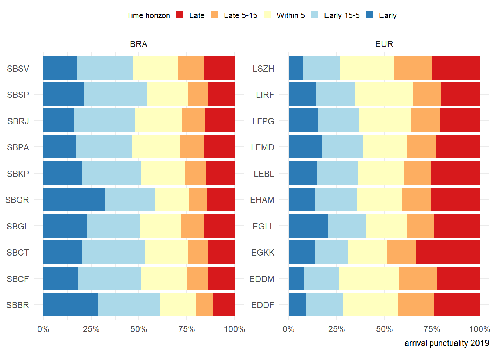
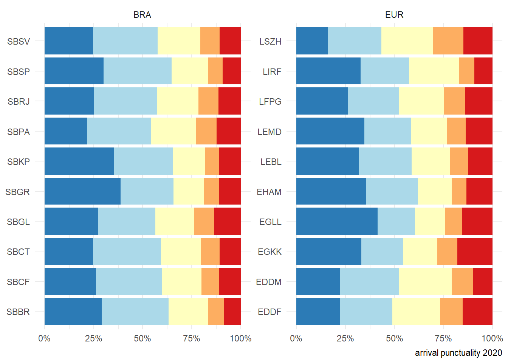
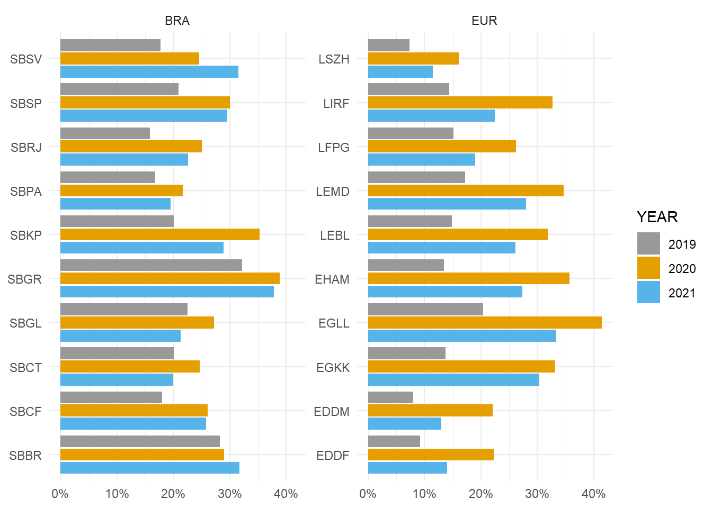
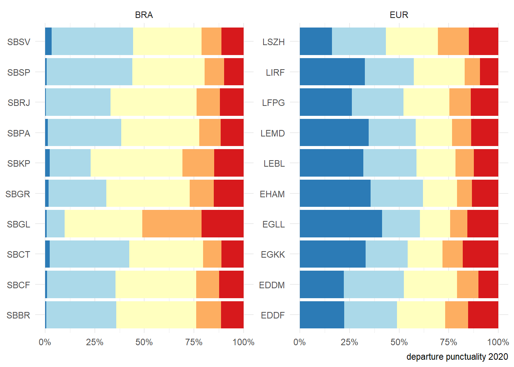
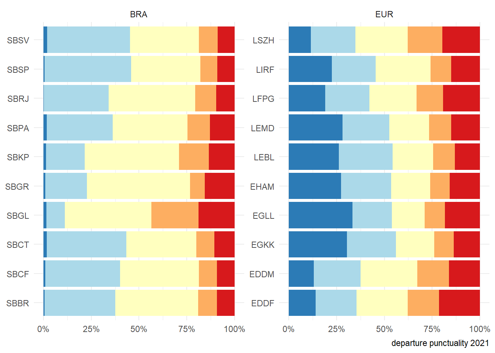
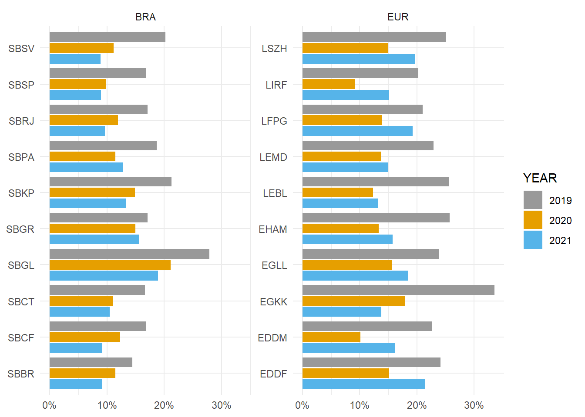

4 Predictability
The previous chapters showed distinct responses by both systems to the overall air transport developments. Predictability in the system affects operations in both the strategic phase when airline schedules are produced and in the operating phase when ANSPs and stakeholders are balancing demand and capacity. High levels of predictability will benefit ANSPs servicing airspace users with a view to achieving highly efficient operations also during peak periods. This report focuses on the arrival and departure punctuality as measures of predictability.
4.1 Arrival Punctuality


Figure 4.1 shows the evolution of arrival punctuality for the select airports in Brazil and Europe. In 2019, about 70% of flights arrived within 15 minutes of their scheduled arrival time on average in both regions. This raises concerns about schedule stability with a share of about 30% of flights arriving either well before 15 minutes or late when compared to the schedule. However, the punctual portion of the flights was further compressed in 2020, with the crisis peak. This share noticed a brief relief in 2021, with demand resuming its historical levels. The Brazilian data showed a soft advantage in the last year. On average a higher share of traffic at European airports arrives within + 15 minutes late of the scheduled arrival time. Within the European region, arrival punctuality decreased in 2020 with a higher share of early arrivals at all airports. The lower arrival punctuality was also characteristic for arrivals in 2020 in Brazil. TThe larger airports in Brazil, São Paulo/Guarulhos (SBGR), São Paulo/Congonhas (SBSP), Campinas (SBKP), and Rio de Janeiro Galeão (SBGL) observed a higher share of non-punctual arrivals (more/less than 15 minutes compared to the scheduled arrival time). A similar behaviour was also observed in 2021 across the Brazilian airports. In Europe, the schedule reliability has been improved for late arrivals, notably Rome (LIRF) in 2020 and Barcelona (LEBL) in 2021. However, pre-COVID levels have not been fully achieved. It is interesting to observe flights arriving well before their scheduled arrival time. Despite increasing end-user satisfaction, early arrivals did not reflect a healthy system and did contribute to a certain degree of inefficiency in the use of airspace and ground infrastructure due to the lack of predictability. Across the airports this portion of flights varies. However, on average, about 20-30% of flights arrived more than 15 minutes before their scheduled arrival time. The associated pattern and share varied across the 2019-2021 horizon. For a future report it will be interesting to investigate how structural this pattern is (i.e. which connections or service types showed this behaviour). Early arrivals may pose problems to the service delivery as available runway, apron, and stand capacity may negatively impact the management of the arrival flow. Figure 4.2 highlights the share of arrivals with more than 15 minutes compared to the scheduled arrival time. For the European region, the significant lower load on the system is visible. Early arrivals increased roughly doubled in 2020 compared to 2019 and contracted again with 2021 and the overall higher traffic levels. This pattern is more diverse at the Brazilian study airports. This suggests that on average a higher level of flights arrive well ahead of their scheduled time.

4.2 Departure Punctuality
This section analyses the level of departure punctuality. The previous section showed that the overall traffic situation during the previous years impacted the reliability of schedules for arrivals. Though the overall pattern represented a decline in traffic due to COVID, early arrivals may impact and put an additional strain on the infrastructure (runway system, apron, and stands).


When looking at the interval of -/+15 minutes between actual off-block time and scheduled off-block time, a different pattern than on the arrival side emerges. On average, about 50% of all flights depart within that interval in Europe, with 2019 presenting a sightly larger share of punctual flights while 2020 and 2021 showed a noticeable decreasing in late departures.
For the European airports higher shares of early departures were observed in 2020 and 2021. While schedule reliability improved in 2021 vs 2020, the pre-COVID levels were not reached at the European airports. This suggests that there are still constraints surrounding the facilitation of passengers and turn-around at the airports. London Heathrow (EGLL) was the most affected European Airport, having its punctual portion compressed by the extremes shares.
The Brazilian side did not show relevant variations in takeoff punctuality, with early departures (-15 min) barely changing. Actually, there is a negligible number of departure that blocked off less than 15 minutes early.
Interestingly this behavior was not impacted by the distortion of traffic during the COVID phase. However, a soft improvement in late departures (+15 min) is noticed. 2021 performed slightly better than 2020, even with significantly more traffic. Galeão (SBGL) presented the worst indicator in all years but improved throughout the period.
In general, departures in 2020 and 2021 showed similar levels than in 2019.
The following figure highlights the share of late departures across the years. The unprecedented decline in air traffic resulted in significant lower shares of late departures decreased at the all studied airports in 2020 in comparison to 2019. Comparing the difference between 2021 and 2020 shows a similar structural pattern across all European airports. The number of late departures increased in comparison to the peak COVID-year 2020. This may be linked to two drivers. On one hand traffic levels increased again with more states reducing restrictions on air travel while still passenger screening and health measures required heightened processes. In Brazil, higher levels of departure punctuality were observed. Although the change from 2020 to 2021 ranges in the oder of magnitude of under 5%, the same pattern was obsered at all Brazilian airports.

4.3 Summary
Arrival and departure punctuality play an important role in terms of balancing demand and capacity. Punctuality in this chapter is measured as the difference between the actual arrival/departure times versus the respective scheduled times. This also reflects the stability and planning accuracy of the schedule in terms of air navigation services. Distinct patterns were observed in both regions. For example, on average about 50% of all flights arrive and depart within a window of -/+15 minutes in Europe. The influence of slot control is more visible with the demand level of 2019.
On the other hand, a higher share of flights depart within -/+5 minutes of their schedule in Brazil.
In both regions, the impact of the decline of air traffic is observable in the predictability in 2020 and 2021. However, there are different patterns in Brazil than in Europe. Europe showed a stronger reaction in terms of early arrivals (i.e. arriving more than 15 minutes before schedule) and departures (departing later than 15 minutes after the scheduled departure time). Traffic at Brazilian airports showed a similar reaction to the declining traffic in 2020 only in the arrival phase. The departure flights did not showed significant change in their punctuality. The behavior in 2021 is still far from the 2019 pattern in both regions. However, it appears that returning air traffic and load on the system drives the move towards pre-COVID levels in Europe. For example, the share of arrivals punctuality in 2021 ranges closer to the 2019 levels (i.e. Guarulhos SBGR, and Heathrow EGLL). Early arrivals, in its turn, doubled in Europe when comparing 2020 to 2019 level, and dropped again in 2021 broadly reversing the trend while not reaching 2019 levels.
This suggests that there is higher uncertainty in terms of movements with the returning traffic in both regions. More research is needed to investigate the underlying drivers and to what extent regional connectivity influences these behaviors.